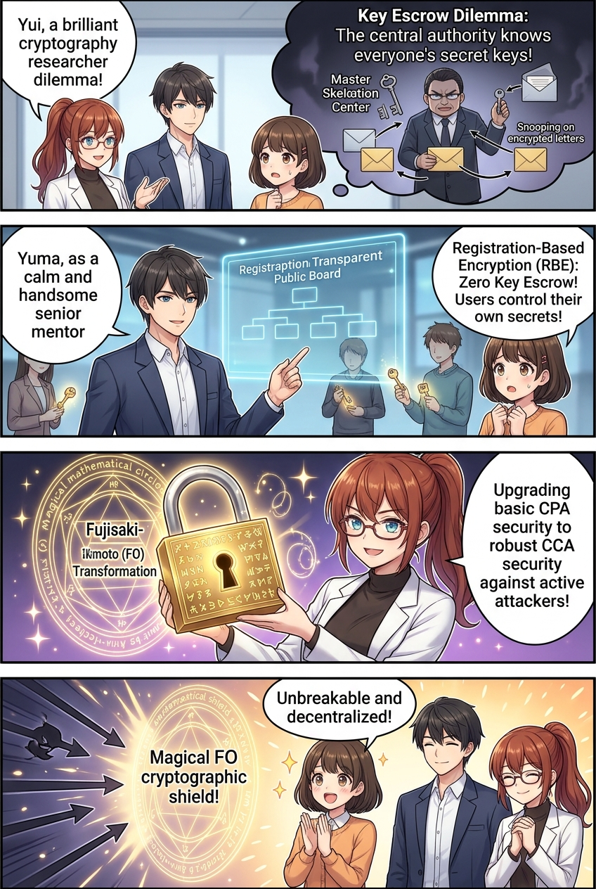
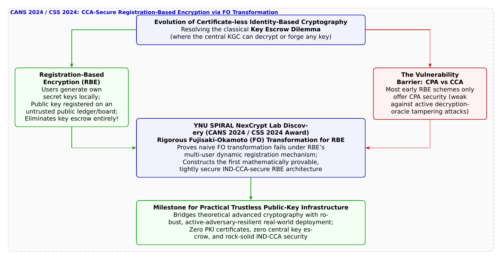

🎨 4コマ漫画挿絵（文字なし）
AI高解像度生成
▲ 【挿絵】青葉台高校 情報科学部＆帝都科学大学サイバーディフェンス・ラボでの実践シーン
💬 4コマ漫画キャラクターセリフ (Story Dialogue Script)
日・英バイリンガル (JA / EN)[葵]「えっ、暗号の元締めがみんなの秘密を覗き見できちゃうの！？」
[Aoi] "Wait, the master key authority can peek at everyone's secrets!?"
[結衣]「ですが従来のRBEは受動的攻撃（CPA）しか防げず、実用通信で必須の能動的攻撃耐性（CCA安全性）の証明が未解決だったのです……」
[Yui] "However, existing RBE was only CPA-secure; proving IND-CCA security against active tampering remained an open hurdle...!"
[結衣]「古典的なFO変換をそのまま使うと破綻する盲点を突き止め、動的な複数ユーザー環境でも最強のIND-CCA安全性を数学的に証明したのですね！」
[Yui] "Proving naive FO fails under dynamic multi-user registration, they constructed the first provably IND-CCA-secure RBE!"
[蓮]「中央の権力に依存しない、真の分散インターネットの夜明けだ！」
[Ren] "The dawn of a truly decentralized internet free from centralized overlords!"
📖 小説本文
冬の澄み切った空気が差し込む放課後の情報科学部室。黒板には、白石結衣の美しい筆跡で複雑な楕円曲線と準同型代数の数式がびっしりと書き込まれていた。
「……第35話で、私たちが学んだ『IDベース暗号（IBE）』を覚えていますか、葵先輩？」
黒板の数式を指しながら、結衣が振り返った。橘葵が記憶をたどりながら答える。
「もちろん！ デジタル証明書（PKI）の面倒な認証局を使わずに、相手のメールアドレスや社員番号をそのまま公開鍵にして暗号化できる画期的な仕組みだよね？」
「はい。ですが、IBEには誕生以来40年間、数学者たちを悩ませ続けてきた最大の構造的ジレンマ――**『鍵預託問題（Key Escrow Dilemma）』**が存在するのです」
神崎蓮が頷きながら、ノートPCのキーを叩いた。
「IBEでは、システムを管理する『鍵発行局（KGC: Key Generation Center）』がマスター秘密鍵を使って全ユーザーの秘密鍵を計算・配布する。つまり、KGCの管理者やサーバーをハッキングした攻撃者は、世界中の全通信を一切痕跡を残さずに盗聴・復号できてしまうし、誰にでもなりすませるんだ」
「ええっ！？ 『私を信じて秘密鍵を受け取ってください』って言ってる元締めが、実は全員の合鍵をポケットに入れてるようなものじゃない！」葵が目を見開く。
「その通りです」結衣が頷く。「この中央集権の危険を根本から解決するために近年考案されたのが、**『登録ベース暗号（RBE: Registration-Based Encryption）』**です」
「登録ベース暗号……？」
「はい。RBEでは、各ユーザーが自分自身の手元（セキュアエレメントなど）でランダムに秘密鍵と公開鍵のペアを独立に生成します。鍵発行局は存在せず、代わりに用意された『公開掲示板（Untrusted Registry）』に、自分のIDと公開鍵を登録するだけです。掲示板はマークル木のような圧縮構造（ダイジェスト）を公開し、誰も他人の秘密鍵を知ることはできません」
「すごい！ それなら誰も合鍵を盗み見できない完全なゼロトラスト暗号になるじゃん！」葵が歓声をあげた。
しかし、部室の奥から歩み出てきた城崎悠真が、静かに首を横に振った。
「ところが葵ちゃん、理論上は完璧に見えるRBEにも、現実世界に配備するための『巨大な壁』が立ちはだかっていたんだ」
「巨大な壁……？」
「**『選択暗号文攻撃（CCA: Chosen-Ciphertext Attack）』に対する安全性**だ」と悠真は言った。
「従来の多くのRBE方式は、攻撃者が盗聴するだけの受動的な『選択平文攻撃（CPA）』に対してしか安全性が証明されていなかった。しかし現実のサイバー攻撃者は、暗号文の一部を巧妙に改ざんして復号サーバーに送りつけ、エラーの反応から秘密鍵を特定しようとする（CCA攻撃）。実用的な暗号システムとして国際標準になるには、最強の安全性指標である『IND-CCA安全性』が絶対条件なんだ」
「古典的な公開鍵暗号では、CPA安全な暗号をCCA安全へと昇華させるための有名な魔法陣**『藤崎・岡本変換（FO変換: Fujisaki-Okamoto Transformation）』**がありますよね」結衣が目を輝かせた。
「その通りだ、結衣ちゃん」悠真が誇らしげに論文を開いた。「先行研究では『RBEにもFO変換を適用すればCCA安全になるはずだ』と直感的に言われていた。だが、それを厳密に検証した者はいなかったんだ。そこで、横浜国立大学SPIRALの**四方順司教授（NexCrypt Lab長）、知久奏斗氏、原啓祐氏、橋本啓太郎氏、冨田斗威氏ら**の研究グループが立ち上がった」
悠真は論文の核心をスクリーンに映し出した。
「研究チームは、国際暗号学会議『CANS 2024』および情報処理学会『CSS 2024』において、**『従来のFO変換を登録ベース暗号にそのまま適用すると、マルチユーザー登録の特殊な力学によってセキュリティ証明が破綻する』という致命的な落とし穴を世界で初めて暴き出した**んだ。そして、RBE特有のダイジェスト圧縮と登録メカニズムに適合させた、**『厳密に安全性が証明されたFO変換の新しい構成法』**を確立し、CSS 2024で見事**優秀論文賞**を受賞したんだよ」
「ただの思い込みを排して、数理の底にある歪みを暴き、完璧な安全性の証明を創り上げたんだ……！」蓮が息を呑んだ。
黒板の上に、新しく定義されたFO変換の美しい代数アルゴリズムが広がる。
「中央の管理者に秘密を委ねる必要もなく、悪意ある改ざんパケットも数学の力で完全に弾き返す。真の自由と安全を両立する未来のインターネットの鍵が、いまここにあるのですね」
結衣の透き通った声に、葵も蓮も静かに頷いた。見えない数理の盾が、世界を縛る鎖を解き放ち、新しいデジタルの地平線を照らし出していた。
---
📊 セキュリティ構造図解 (TikZ LuaLaTeX生成)
国家安全基準・工学図解
▲ 【技術構造図】IPAデジタルスキル標準・国際規格に準拠した仕組みのモデル化